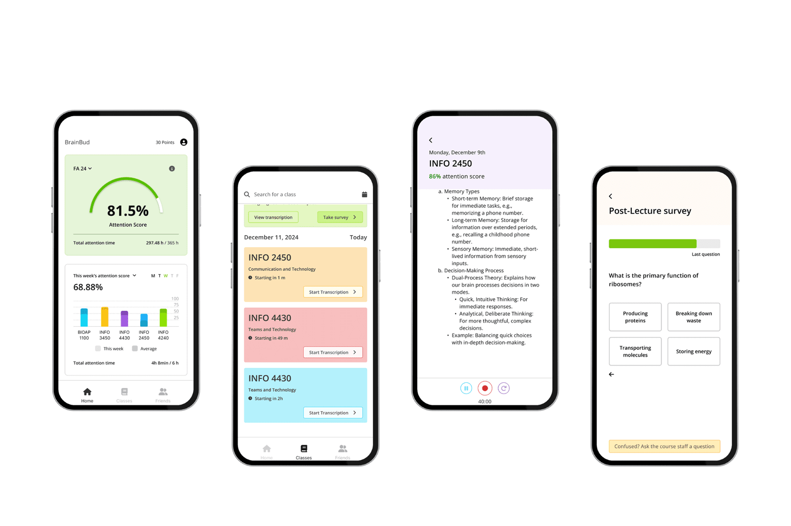
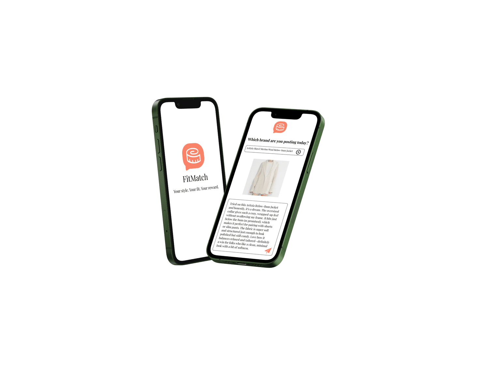
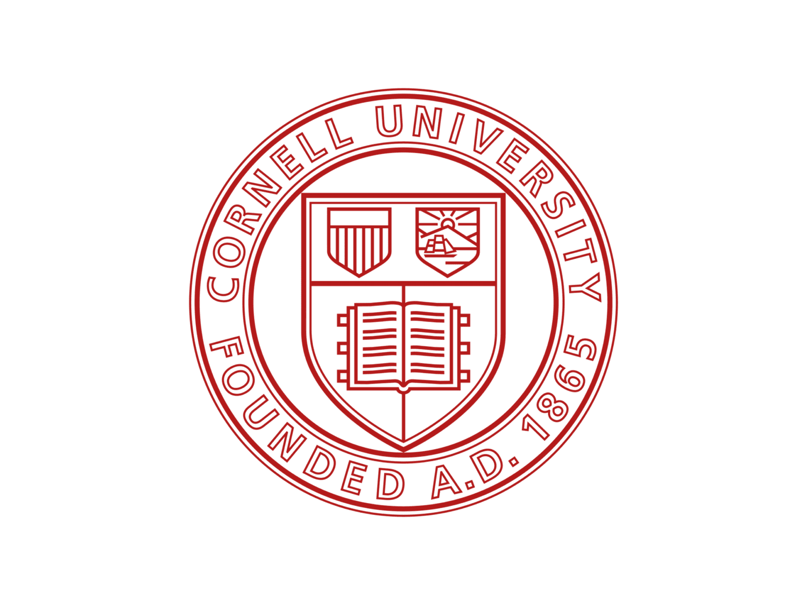

I design for the way people live, learn, and connect.
I’m Penny, a Master of Design student at UC Berkeley with a background in information science at Cornell.
Explore my work ↓Selected work (04)
Project indexFIG. 01

Accessibility / Product design · 2024
BrainBud ↗
A focus companion for students who find it hard to stay engaged through a lecture.
FIG. 02
Mobility / Service design · 2025
HopIn ↗
A local ride-matching concept built around proximity, trust, and the cost of getting around town.
FIG. 03

Co-design / Product design · 2025
FitMatch ↗
A shopping prototype that brings real people and their fit experiences into the fitting room.
FIG. 04

Research / Human–robot interaction · 2024–25
Cornell Architectural Robotics Lab ↗
Three investigations into how robotic spaces can support comfort, control, and connection.